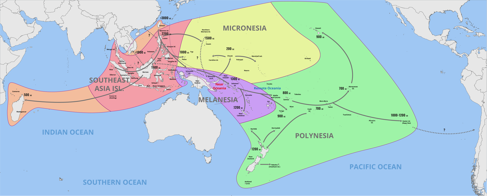
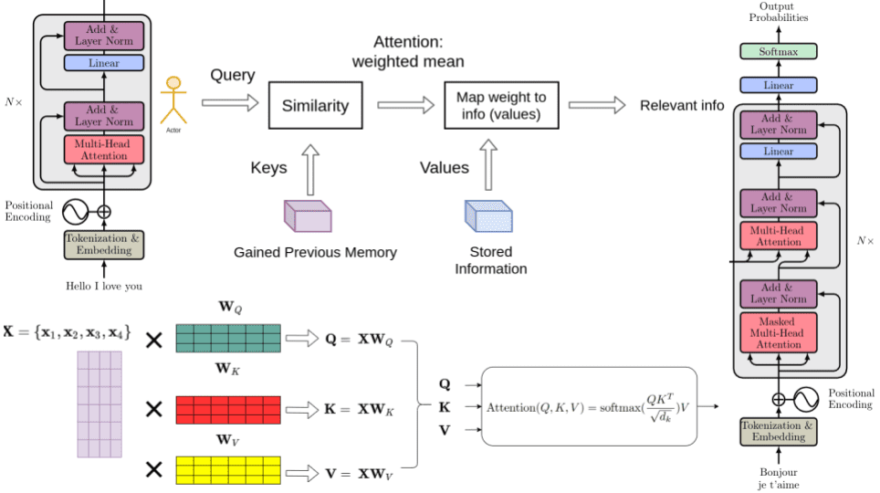
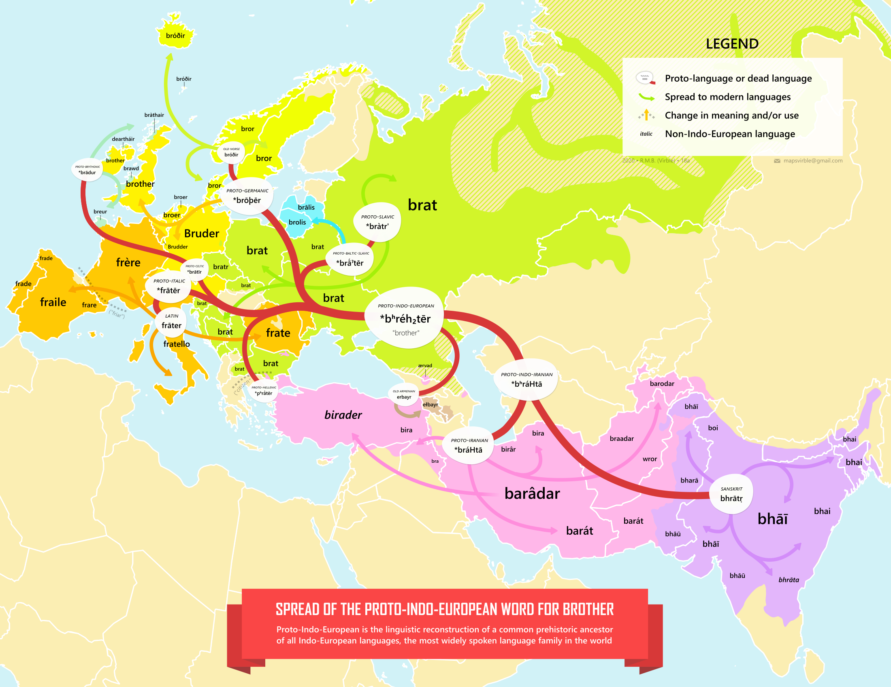
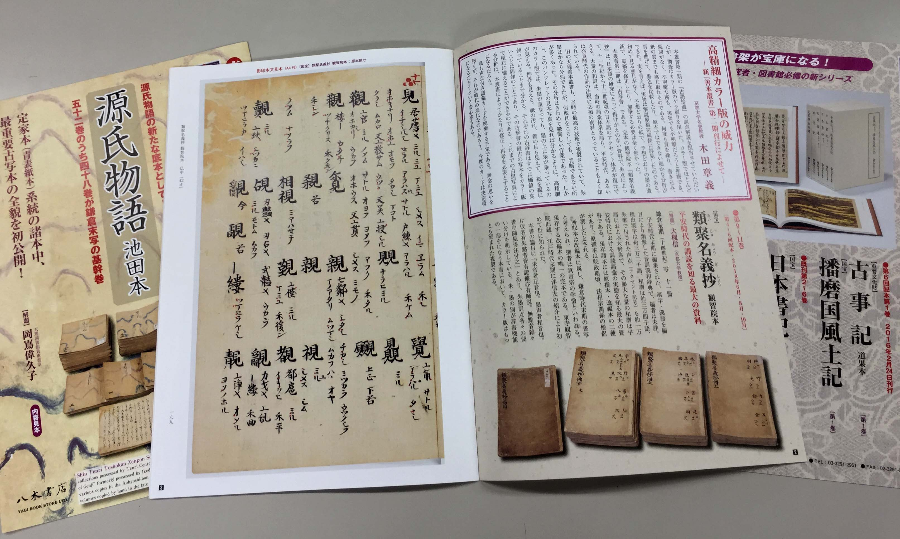
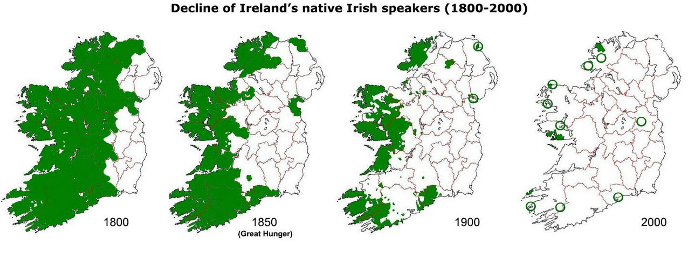

Ayaka’s Website
Find me on

Public works
For a list of my open-source projects, please see my GitHub homepage.Blog posts
- Visualising the Computational Graph of a JAX Program
- A Simple Introduction To Data Parallelism In JAX
- Print the Results of JIT Compilation in JAX
- Connect to Google Colab Using SSH
- Installing Packages on Linux Without sudo Privilege Using JuNest
Introduction
I am Ayaka, a 23-year-old computer science artist.
My interests lie in two main areas. Firstly, for contemporary languages, both widely spoken and under-resourced, I wish to design artificial intelligence that has the ability to understand and process them, so that our lives can benefit from technology.
Secondly, for the historical development of languages, I am interested in exploring how ancient languages of different geographical areas and different ethnic groups have been shaped into what they are today, and what they will become in the future.
To address this first problem, I regard natural language processing as the primary goal of my life. By virtue of my background in computer science, I easily gained a good grasp of the architecture of the state-of-the-art models. At present, I am pre-training large-scale natural language models using Google Cloud TPU.
In particular, for low-resource languages, while humans can be adaptive in choosing appropriate methods to master them, current AI is unable to do so. Therefore, my long-term objective is to find a proper transfer learning method that enables AI to automatically pick up low-resource languages without human supervision, given the comprehensive data available on the Internet.
For the second problem, I regard knowing the history of various languages as a pre-requisite. Towards this end, I have been acquiring a substantial amount of knowledge in historical linguistics. For the Chinese language, on the basis of my mastery of the Qieyun phonological system, I have developed the widely-used qieyun-js programming library. For the Japanese language, I am conversant with the history of Japanese kanji pronunciation and can fluently read any text written in kanji using on'yomi.
Subsequently, I have been studying many groups of similar languages and dialects to increase my understanding of the evolution of languages, incorporating the knowledge of the history of migration and molecular anthropology. For instance, in addition to my proficiency in Mandarin and Cantonese, I am also familiar with the Hakka and Teochew dialects. For North Germanic languages, I am simultaneously learning Norwegian, Danish and Swedish. Based on the in-depth understanding of language evolution, I will be able to speculate on the future of world languages.
In addition to my two passions above, I am keen on web development so that I can bring my creations to the world. Besides, I enjoy learning Haskell and more than a dozen of other programming languages, which is even more than the natural languages I can speak. My other hobbies include singing, {plane,train,ship}-spotting, stargazing and typography.